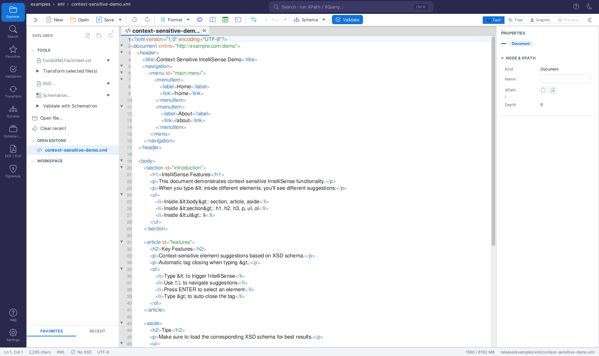
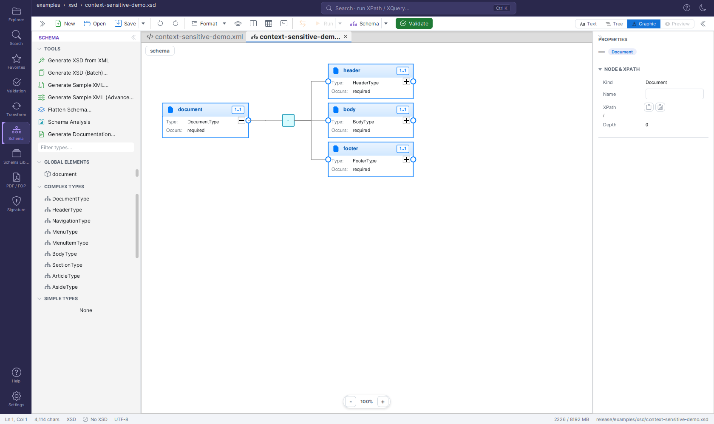
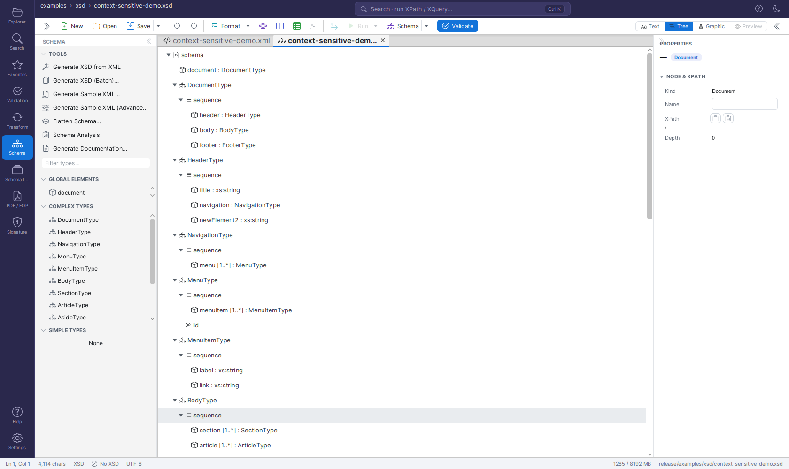
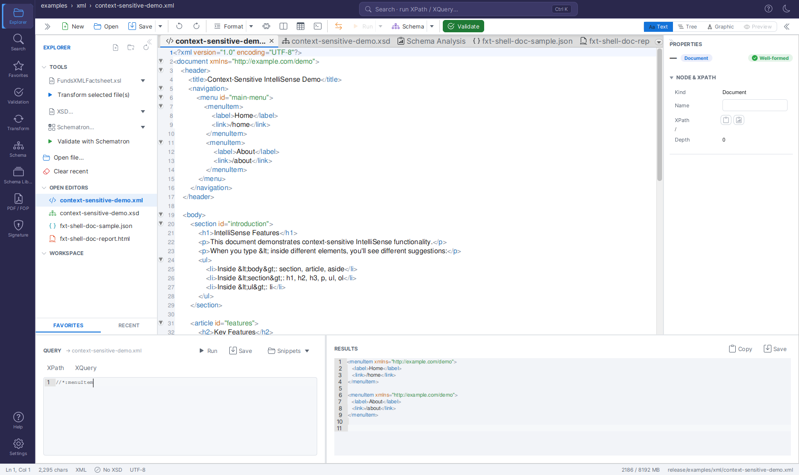

Unified Shell¶
The application opens directly into the Unified Shell - one workspace that combines XML, XSD, XSLT, Schematron and JSON editing with all the validation, transformation, signing and documentation tools. The separate legacy tabs have been consolidated here.
Overview¶
The Unified Shell is the single workspace for everything FreeXmlToolkit does. Instead of switching between separate editor pages, you open files as tabs in the central editor host and reach every tool through the activity bar on the left. You can work with an XML file next to its XSD schema, XSLT stylesheets and Schematron rules at the same time.

The Unified Shell: activity bar (left), Explorer side panel, editor host with an XML file (Text/Tree/Graphic view toggle), the Properties inspector (right) and the status bar.Layout¶
| Area | Purpose |
|---|---|
| Activity bar (far left) | Switch tools / side panels: Explorer, Transform, Validation, Signature, Type Library, FOP/PDF, Favorites, Settings, Help. Always visible - it cannot be collapsed. (Settings opens as a full page in the editor area - see Settings Page.) |
| Side panel | The panel for the selected activity (e.g. the Transform panel, the Validation panel). Collapsible (see Collapsing the side panels). |
| Editor host (center) | Tabs of open documents, each with three view modes - Text, Tree, Graphic (see View Modes). |
| Inspector (right) | View and edit the selected node's properties from any view. Collapsible (see Collapsing the side panels). |
| Status bar (bottom) | Caret position, validation status and a memory indicator. |
Collapsing the side panels¶
Both the left side panel and the right Properties inspector can be collapsed to give the editor more room - the activity bar always stays visible.
- Collapse: click the discreet double-chevron at the panel's inner edge (
<<on the left panel,>>on the inspector). The panel is hidden completely. - Re-open: click the matching toggle button in the editor toolbar (left-most toggle for the side panel, right-most for the inspector) - the same mechanism on both sides. Selecting any activity from the activity bar also re-opens the left side panel.
- The collapsed/expanded state is remembered across restarts and can also be changed under Settings → General ("Show left side panel" / "Show Properties (inspector) panel").
Key Features¶
- Multi-tab editing - Open multiple files of different types in one view
- Automatic file type detection - Files are recognized by extension (.xml, .xsd, .xsl, .sch, .json)
- View modes per document - Text, Tree and Graphic, all over one shared model (see View Modes)
- Inspector editing everywhere - edit node properties from the Text, Tree and Graphic views, not just one
- Integrated XPath/XQuery - a bottom Query Console queries the active XML/JSON file right from the editor (Ctrl+Shift+X)
- Editor toolbar actions - run Validate, Transform, Generate Documentation and Open Type Editor for the active document without switching activities
- Search & Replace - Ctrl+F / Ctrl+H across the editor
- Favorites - Quick access to frequently used files
Getting Started¶
- The Unified Shell opens automatically on startup.
- Use the Explorer activity (or File → Open) to open files; File → New creates a new file.
- Files open as tabs in the editor host - switch tabs by clicking their headers, and switch view modes (Text / Tree / Graphic) with the segmented view switch.
View Modes¶
Updated in June 2026 - There are now exactly three view modes - Text, Tree, and Graphic - each with its own icon in the segmented view switch. The former separate Grid mode has been merged into Graphic.
Every document tab offers the same three view modes:
| Mode | What it shows |
|---|---|
| Text | Source code editing with syntax highlighting |
| Tree | The document as a hierarchical tree |
| Graphic | A visual editor that depends on the document type: for XML, XSLT, and Schematron files it shows the editable XMLSpy-style grid; for XSD files it shows the schema diagram |
All views share one in-memory model per document, so edits and Undo/Redo history are preserved when you switch views.
The Grid (Graphic view for XML)¶
When an XML-instance document (XML, XSLT, or Schematron) is in the Graphic view, the editor shows the editable grid:
- A header strip at the top reads "Grid view · nested · repeating elements as embedded grids" and offers a Collapse all button that folds every container at once.
- Rows with a simple value are marked with a
{}marker so you can tell value rows from containers at a glance. - Attributes always show as
@namerows directly beneath their element - also while the element itself is collapsed. - Collapsed containers show a "collapsed" hint, so you always know there is hidden content.
- Repeating elements are rendered as embedded grids (tables inside the row).
- Keyboard navigation works as soon as the view opens (no click needed): ↑/↓ walk the rows, → expands a collapsed element, ← collapses it (or jumps to the parent), Enter toggles a container / starts editing a value, Home/End jump to the first/last row, F2 renames, and the usual Ctrl+C/X/V, Ctrl+D (duplicate) and Delete act on the selected node.
Supported File Types¶
| Type | Extensions | Features |
|---|---|---|
| XML | .xml | Text + graphic view, XSD/Schematron linking, IntelliSense, continuous validation |
| XSD | .xsd | Text + graphic view, Type Library, Type Editor, Schema Analysis, Documentation, Sample Data, Flatten |
| XSLT | .xsl, .xslt | XSLT editor + XML input + output preview, live transform, parameters, performance metrics |
| Schematron | .sch | Code editor + Visual Builder + Tester + Documentation Generator |
| JSON | .json, .jsonc, .json5 | Text + tree view, JSONPath queries, JSON Schema validation |
Toolbar¶
The toolbar provides common operations and context-sensitive buttons. The action icons wrap onto a second row when the editor area is narrow, so every action stays visible and clickable (there is no hidden "overflow" menu).
Always Visible¶
- New - Create XML, XSD, XSLT, Schematron, or JSON files
- Open (Ctrl+O) - Open one or more files
- Save (Ctrl+S) - Save the current tab
- Save As - Save the current tab under a new name (a file chooser opens, pre-set to the tab's file type)
- Save All (Ctrl+Shift+S) - Save every open tab at once
- Recent (Ctrl+Shift+R) - Recently opened files
- Close (Ctrl+W) - Close current tab
- Validate (F5) - Validate current document
- Format (Ctrl+Shift+F) - Pretty-print current document
- Undo (Ctrl+Z) / Redo (Ctrl+Y)
- View - Switch between Tabs, Side-by-Side, or Top-Bottom split views
- Convert - XML to/from Excel/CSV (Ctrl+E)
- Templates (Ctrl+T) - XML template system
- Generator (Ctrl+G) - Generate XSD from XML
- Tools - Open FOP (PDF Generation) or Digital Signatures as tool tabs
- Query Console (Ctrl+Shift+X) - Toggle the bottom XPath/XQuery console (terminal icon)
Document Actions (type-gated)¶
New in June 2026 - Run the most common per-document operations straight from the editor toolbar, without switching the left activity bar.
These toolbar buttons act on the active document and only light up when they apply to its type. Each one opens its result as a tool tab. See Editor Toolbar Document Actions below.
- Validate - Validate the active document (XML, XSD, XSLT, Schematron, JSON).
- Transform with XSLT… - Pick a stylesheet and transform the active XML document.
- Generate Documentation… - Generate HTML/PDF/Word documentation for the active XSD.
- Open Type Editor… - Pick a named type from the active XSD and edit it in a focused tab.
Shown for XML Files¶
- Console - Toggle log output panel
- XSLT - Toggle embedded XSLT development panel
- Template - Toggle template development panel
Shown for JSON Files¶
- Minify - Remove all whitespace from JSON
- Schema - Load/clear JSON Schema, validate against schema
Shown for Schematron Files¶
- Insert - Quick-insert Pattern, Rule, Assert, or Report elements
Panel Toggles¶
- Linked (Ctrl+L) - Show/hide linked files panel
- Query Console (Ctrl+Shift+X) - Show/hide the bottom XPath/XQuery query console (terminal icon in the editor toolbar). See Query Console below.
- Properties (Ctrl+Shift+P) - Show/hide properties and validation sidebar. For XML files, the properties inspector lets you view and edit a node's properties (element name, namespace, attributes, and text content) from all three views - Text, Tree, and Graphic (the grid). For XSD files, the same inspector lets you edit a schema node's properties from all three XSD views - Text, Tree, and Graphic. See Properties Inspector below.
- Favorites (Ctrl+Shift+B) - Show/hide favorites panel
XSD Views & Tools¶
When editing an XSD file, the editor host and the Schema activity provide:

An XSD open in the Graphic view, with the Schema activity panel (Type Library, Flatten, Statistics, Schema Quality, Generate Sample XML / Documentation) on the left.
The same schema in the Tree view - select a node to edit its properties in the inspector.- Text - Source code editing with syntax highlighting; moving the caret into a schema construct also lets you edit its properties in the Properties pane (see Properties Inspector)
- Graphic - Visual XMLSpy-style schema diagram
- Type Library - Browse all types with filtering, search, and usage counts
- Type Editor - Edit ComplexTypes graphically, SimpleTypes with form editor
- Analysis - Schema statistics, identity constraints, quality checks
- Documentation - Generate HTML/Word/PDF documentation
- Sample Data - Generate sample XML from the schema
- Flatten - Merge included/imported schemas into a single file
XSLT Features¶
XSLT work happens in the Transform Panel (Activity Bar → Transform):
- Run Transform - Run an XSLT transformation against the chosen input
- Live preview (⋮ menu) - Re-run automatically while you edit
- Parameters - Define XSLT parameters (name = value rows)
- Output method - Auto-detect or choose XML, HTML, XHTML, Text, or JSON output
- Timing - The OUTPUT panel status shows execution time and output size
- Profile / Trace / Debug (⋮ menu) - Per-template timings, template-match trace with
xsl:messageoutput, and the interactive debugger - Open in browser - View HTML output in your default browser from the OUTPUT panel
Transform Panel¶
Redesigned in June 2026 - The panel is now organized into collapsible sections (STYLESHEET, INPUT, OUTPUT METHOD, PARAMETERS, XPATH, XQUERY) with a single primary Run Transform button. Results no longer open as an editor tab automatically - they appear in a new OUTPUT panel docked below the editor. All secondary toggles and tools moved into the panel header's ⋮ (overflow) menu.
The Transform panel (open it from the Transform icon in the activity bar on the left) runs XSLT transformations, XPath/JSONPath queries, and XQuery expressions. The panel header reads TRANSFORM and carries a ⋮ (overflow) menu with the secondary options (see The ⋮ Menu below). Each section header is clickable to collapse or expand that section.
STYLESHEET¶
- Shows the name of the chosen XSLT stylesheet (or none if no stylesheet is set yet).
- Change - pick an
.xsl/.xsltfile from disk. - The clock icon opens the recent stylesheets menu: reapply a recently used stylesheet in a single click, or choose Clear recent to empty the list.
INPUT¶
The INPUT section shows which document the transform will use as its input:
- By default the input follows the active editor document: switch to another tab and the next run transforms that document (the shown input name updates live).
- Change opens a small menu with two options:
- Select XML file… - transform a fixed XML file from disk instead, regardless of which editor tab is active.
- Use active editor - go back to following the active tab.
OUTPUT METHOD¶
A segmented control with Auto · XML · HTML · XHTML · Text · JSON. Auto (the
default) detects the output format from the stylesheet's xsl:output declaration; pick a
concrete format to override the detection.
PARAMETERS¶
Define XSLT parameters as name = value rows:
- Add parameter adds a new row.
- Each row has its own remove button.
- The values are passed to the stylesheet on every run.
Running a Transformation¶
- Choose a stylesheet (STYLESHEET → Change, or pick one from the recent menu).
- Check the INPUT section shows the document you want to transform.
- Click Run Transform.
The result appears in the OUTPUT panel below the editor - see The OUTPUT Panel below.
XPATH and XQUERY¶
Two further sections, collapsed by default, run queries against the transform input:
- XPATH - a query field with Run, Save Query (store the current expression under a name), and a Saved menu listing your saved queries (pick one to load it). When the active document is JSON, the section is titled JSONPATH and the field evaluates a JSONPath expression instead.
- XQUERY - a multi-line query area with Run XQuery and an Examples menu (Simple, FLWOR, HTML report, Data-quality check).
Both inputs offer context-aware autocomplete. Query results appear in the same OUTPUT panel below the editor.
The Transform ⋮ Menu¶
The secondary toggles and tools (the former Advanced section) live in the panel header's ⋮ (overflow) menu:
| Entry | What it does |
|---|---|
| Live preview | Re-runs the transform automatically (debounced) while you edit the input document. |
| Watch stylesheet file | Re-runs the transform whenever the chosen stylesheet changes on disk - handy while editing the stylesheet in another tool. |
| Profile run | A transform also opens a read-only Profile tool tab (timings + per-template execution times). |
| Trace run | A transform also opens a Trace tool tab (template matches + xsl:message output). |
| Auto-open result tab | Additionally opens every successful result as a regular editor tab. Off by default. |
| Debug XSLT… | Opens the stylesheet as a document with a breakpoint gutter and a Debug tool tab (step into/over/out, continue, stop; variables, call stack, breakpoints, and XPath watches). |
| Batch Transform… | Runs the active stylesheet/XQuery over many XML files, with per-file results and "Save All". |
XSLT version selection (1.0/2.0/3.0) is intentionally not offered: Saxon HE auto-detects the version from the stylesheet's
versionattribute, so an explicit selector would be cosmetic.
The OUTPUT Panel (Results)¶
New in June 2026 - Transform and query results now appear in an OUTPUT panel docked below the editor instead of automatically opening editor tabs and a separate HTML-preview tool tab.
All Transform-panel results - XSLT transforms, XPath/JSONPath queries, and XQuery runs - appear in an OUTPUT panel that docks below the editor: the source document stays on top and the result shows underneath, while the Properties inspector keeps its full height. The panel persists across activity switches, so the last result stays visible while you work elsewhere.
The OUTPUT panel header shows:
- A format badge (XML, HTML, …) for the result.
- A status: a green check with
Transformed · N ms · M charson success (how long the run took and how large the output is), or a red error icon with the error message on failure. - View toggles - Preview | Text | Table:
- Text - the raw result as text (the default).
- Preview - the result rendered as a web page; available for HTML/XHTML results only.
- Table - available for XQuery results that return a sequence of items (auto-selected when applicable). Each item becomes a row, and the columns are taken from each item's child elements (or, if an item has no child elements, its attributes). A sequence of plain values is shown in a single value column.
- Actions:
- Open result as editor tab - opens the result as a regular document
(
Transform-Result.xml/.html/.json/.txt) that you can edit and save. - Open in browser - opens the result (typically HTML) in your system web browser.
- Save result… - writes the result straight to a file.
- ✕ - hides the OUTPUT panel; it reappears automatically on the next run.
- Open result as editor tab - opens the result as a regular document
(
Note
In earlier versions, every transform opened a Transform-Result.* editor tab, and HTML
output additionally opened an "HTML Preview" tool tab. Both were replaced by the OUTPUT
panel: an editor tab now opens only via the panel's Open result as editor tab action
or the Auto-open result tab toggle in the ⋮ menu, and HTML is rendered inline via
the panel's Preview view.
Explorer Panel¶
Open the Explorer panel from the activity bar to manage files.
Redesigned in June 2026 - the panel now follows the application's modern design with flat header actions and full-width sections.
- Header actions (top right): New file, Open folder, Refresh workspace, and a ⋮ menu with Open file… and Clear recent.
- OPEN EDITORS - one row per open document. The active document is highlighted (blue, bold) and unsaved documents show a dot on the right. Click a row to switch to that document.
- Workspace - the file tree of the opened folder; the section is titled after the folder's name. Folders expand with their chevron; double-click (or Enter) opens a file. Only XML-family and JSON files are shown.
- RECENT - recently opened files; click to reopen.
- FAVORITES - your favorited files with their type-colored icons; click one to open it directly, without switching to the Favorites activity. (Manage favorites - add, rename, remove - in the Favorites panel.)
- Collapsible sections (new in June 2026) - the OPEN EDITORS, workspace, RECENT, and FAVORITES section headers are clickable: click a header to collapse or expand its section (the chevron next to the title flips accordingly). Use this to give the file tree more room when you have many open editors or recent files.
Favorites Panel¶
Open the Favorites panel from the star icon in the activity bar for one-click access to your saved files.
Updated in June 2026 - Favorites are now grouped by file type (XML Document, XSD Schema, Schematron Rules, XSLT Stylesheet, …), and every entry shows a colored type icon so you can tell the file kinds apart at a glance.
Click a favorite to open it as an editor tab. See Favorites System for adding, naming, and organizing favorites.
Validation Panel¶
Open the Validation panel from the activity bar to validate the active document.
Redesigned in June 2026 - the panel now follows the application's modern design: a SOURCES section, a Single file / Batch mode toggle, a primary Run Validation button, and a color-coded RESULTS list.
Sources¶
The SOURCES section shows the XSD and Schematron files bound to the active document. Click Change next to a source to pick a different file. The star button on the XSD row opens a quick-select menu of your favorited XSD schemas - pick one to bind it in a single click, without browsing the file system. (See Favorites.)
- The referenced XSD binds automatically. When the XML declares its schema
(
xsi:schemaLocation/xsi:noNamespaceSchemaLocation- local or remote), that XSD is bound when the file is opened, and the Validation panel re-checks when it opens, so the declared schema is the default. A schema you picked yourself (via Change, a favorite, or the status bar) is never overridden. - Click a bound source name to open the file in the editor - one click on the XSD or Schematron name opens it as a tab for direct editing.
Tip
You can also bind an XSD without opening the Validation panel: click the
"No XSD" / "XSD: name" indicator in the status bar (or use the editor toolbar's
Set XSD Schema… action) and pick an .xsd file. The binding drives both
IntelliSense and schema validation.
Running a Validation¶
- Pick a mode with the Single file | Batch toggle.
-
Click Run Validation.
-
Single file validates the active document against the bound XSD and/or Schematron.
- Batch validates a whole set of XML files. In Batch mode, Run Validation opens a
small menu with two ways to pick the files (new in June 2026):
- Select XML files… - a file chooser where you pick one or more XML files.
- Select folder… - a folder chooser; every
*.xmlfile in the folder and all of its subfolders is validated.
The RESULTS list then shows one row per file with a status icon (red ✕ = errors, orange ⚠ = warnings only, green ✓ = valid) and a badge with the problem count. Select a row to see that file's problems; double-click to open the file. The plain-text batch report is available via the ⋮ menu (Open last batch report).
Problems¶
Problems appear in two places:
- The PROBLEMS list at the bottom of the side panel.
- The PROBLEMS panel below the editor (new in June 2026): it appears automatically when validation finds problems, shows error/warning counts in its header, and can be collapsed to just the header. Each row shows the message and the file/line in a monospaced label.
Selecting a problem in either list jumps to its line in the editor. This works for Schematron problems too: the failing rule's context node is resolved back to its line in the XML, so a click navigates straight to the offending element.
The ⋮ Menu¶
Secondary tools live in the panel header's ⋮ (overflow) menu:
| Entry | What It Does |
|---|---|
| Schematron Tools → Rule Templates | Insert ready-made Schematron rule patterns |
| Schematron Tools → Tester | Run the Schematron rules against an XML file |
| Schematron Tools → Rule Builder | Build rules visually |
| Schematron Tools → Check Rules | Run an error detector over the Schematron itself and show a categorised issue table |
| Schematron Tools → Documentation | Open the Schematron documentation generator |
| JSON Schema… | Pick a JSON Schema for validating JSON documents |
| Validate against FundsXML | (When the FundsXML extension is enabled) validate against the FundsXML schema |
| Validate while typing | Toggle continuous (debounced) validation |
| Open last batch report | Open the plain-text report of the last batch run |
Check Rules inspects the Schematron file for problems and lists them by category - XML syntax, structural, XPath, semantic, and best-practice issues - so you can fix mistakes in the rules before you rely on them. See Schematron Validation for details.
Schema Panel: Sample-Data Generation¶
Open the Schema panel from the activity bar while an XSD file is active. Alongside type browsing, the panel offers actions to generate sample XML from the schema:
- Generate Sample XML - The simple generator. It builds one sample document using mandatory-only / maximum-occurrence options and realistic example values.
- Generate Sample XML (Advanced)… - Opens a dialog for full control over how the sample data is built (see below).
Advanced Sample-Data Generation¶
New in June 2026 - A rule-based generator with per-XPath strategies, batch output, and reusable profiles.
The advanced dialog turns the schema's XPaths into an editable table. For each XPath you choose a generation Strategy plus a value or pattern:
| Strategy | What It Produces |
|---|---|
| Auto | Type-based automatic value (the default) |
| Fixed Value | A fixed literal you type |
| Sequence | An auto-incrementing value from a pattern (for example ORD-{seq:4}) |
| Enum Cycle | Cycles through the allowed enumeration values |
| Template | A string built from a template with placeholders |
| Random from List | A random pick from a comma-separated list |
| XPath Reference | Copies the value from another XPath |
| XSD Example | An example value taken from the schema's annotations |
| Omit / Empty / Null | Skip the node, leave it empty, or set xsi:nil |
You can also set batch options - a count and a file-name pattern (for example
order_001.xml, order_002.xml) - and Save / Load named profiles so you can reuse
a configuration later.
The dialog can either generate a single document (which opens in a new tab) or a batch of files written to a folder you choose. For a full walkthrough, see Profiled XML Generation and the Sample XML Generator section of the XSD Tools guide.
Inspector (XSD Properties)¶
New in June 2026 - The XSD Properties inspector gained app-info editing, multi-language documentation, comment editing, and constraint deletion.
When an XSD file is open, the Properties inspector (Ctrl+Shift+P) shows the selected schema node. In addition to name, type, cardinality, facets, and constraints, you can now:
- Edit the node's
xs:appinfo- The machine-readable metadata attached to the node. - Edit multi-language
xs:documentation- One row per language. Use Add language to add a translation and the ✕ button to remove one. - Edit comments - Select an XSD comment in the tree to edit its text. To add a new comment, use Add Comment… in a node's right-click context menu.
- Delete a constraint - In the CONSTRAINTS section, select a
key,keyref,unique, orassertconstraint and click Delete constraint to remove it.
Signature Panel¶
The Signature panel (open it from the activity bar) signs and validates XML signatures. Its top is an action nav - selecting an entry shows the matching form below it, next to the shared KEYSTORE section (keystore file with a Change link, alias, and the two passwords):
- Sign XML File (default) - Opens the Sign XML Document card in the editor area:
the document to sign (the active document, changeable via Browse), the keystore alias
and password (shared with the KEYSTORE section), the signature type (enveloped XML-DSig)
and algorithm (RSA-SHA256 · C14N exclusive), and a Sign Document button. The signed
copy is written next to the original (
name.signed.xml) and opened. - Validate Signature - Validate Signature checks the active document's signature; Validate (Details) opens a detailed report (validity + signing-certificate details).
- Create Certificate - Creates a self-signed certificate / keystore from the DN fields, using the alias and passwords from the KEYSTORE section. The new keystore is selected automatically so you can sign immediately.
- Expert Mode - Full PKIX trust validation: choose a trust store (defaults to the
JVM's built-in
cacerts), optionally Check revocation (OCSP/CRL), then Validate (Trust) produces a trust report (trusted / trust anchor / revocation / timestamp).
See XML Digital Signatures for full details.
PDF / FOP Panel¶
The PDF / FOP panel renders the XML to PDF with an XSL-FO stylesheet (Apache FOP):
- INPUT - The XML (follows the active editor; Change can fix it to a file) and the XSL-FO stylesheet (Change).
- METADATA - PDF document Title, Author (pre-filled from your configured user name) and Subject, embedded into the generated PDF.
- OPTIONS - PDF/A-1b compliant renders an archival-grade PDF (requires the
stylesheet to use embeddable system fonts - the built-in base-14 fonts like Helvetica
cannot be embedded, and the error message will say so). Page size (A4/Letter,
Portrait/Landscape) is passed to the stylesheet as the XSLT parameters
page-sizeandpage-orientationfor stylesheets that support them. - Generate PDF asks for the output file, renders off the UI thread, and opens the result in the in-app PDF preview; Preview and Open PDF re-open it any time.
See PDF Generator for stylesheet guidance.
Settings Page¶
Updated in June 2026 - Settings now open as a full page (a tab in the main editor area) instead of being squeezed into the narrow left side panel. The sections are presented as color-coded cards, and a Clear Cache Folder button was added.
Click the gear icon at the bottom of the activity bar: the Settings page opens as a tab in the main editor area, where there is room for all options (the left side panel just shows a short note that settings are edited in the main window). Change any option and click Save Settings to apply (theme changes apply immediately).
| Section | Options |
|---|---|
| Theme | Switch between Light and Dark. |
| Editor | XML indent and JSON indent (spaces); Auto-format after loading; Pretty-print XSD on save; Pretty-print Schematron on load. |
| XSD | Auto-save (with an interval in minutes); Create backups on save (with the number of versions to keep, and an optional separate backup directory). |
| Parser | XML parser engine (Xerces or Saxon); Allow XSLT extension functions. |
| Temp & Cache | Use system temp folder or a custom temp folder; Clear Temp Folder to free disk space; Clear Cache Folder to delete cached files (downloaded schemas etc.). |
| General | Check for updates on startup; Use small icons. |
| HTTP Proxy | Use system proxy, or enter a proxy host and port. |
Clearing the Cache Folder¶
The Clear Cache Folder button in the TEMP & CACHE section deletes the contents of the
application's local cache folder (~/.freeXmlToolkit/cache) - for example downloaded schemas.
A confirmation dialog is shown first, because the action cannot be undone. The cache folder
itself is kept; only its contents are removed.
Welcome / Dashboard¶
New in June 2026 - The welcome screen now shows live statistics and quick tips, and the Tools grid covers every page - including the new Explorer and Settings cards.
When no document is open, the editor shows a welcome dashboard with:
- Stat cards - At-a-glance counts of your Recent files, Favorites, Templates, and Saved queries.
- Tips banner - A short hint banner with handy shortcuts (for example, drag a file onto the window to open it, or use Ctrl+F / Ctrl+H to find and replace).
- Recent files list - Click an entry to reopen it.
- Tools grid - One card per tool; clicking a card opens the matching activity. Alongside Validate, Transform, Schema, PDF / FOP, Signature, and Favorites, two cards are new in June 2026: Explorer (files & workspace) and Settings (application preferences) - so every page can be opened directly from the start screen.
Status Bar¶
New in June 2026 - A memory monitor and a clickable XSD indicator were added to the status bar.
The status bar at the bottom of the window includes:
- An XSD indicator showing the schema bound to the active document - "No XSD" when none
is bound, or "XSD: name" otherwise. Click it to choose an
.xsdfile and bind it to the active document; the binding drives both IntelliSense and schema validation. (The editor toolbar's Set XSD Schema… action does the same.) - A memory monitor showing the JVM heap usage as used / max MB. Click it to run garbage collection, which can free memory after working with large files.
Keyboard Shortcuts¶
| Shortcut | Action |
|---|---|
| Ctrl+O | Open file |
| Ctrl+S | Save current tab |
| Ctrl+Shift+S | Save all tabs |
| Ctrl+W | Close tab |
| Ctrl+Z / Ctrl+Y | Undo / Redo |
| Ctrl+F | Find |
| Ctrl+H | Find and Replace |
| F5 | Validate |
| Ctrl+Shift+F | Format |
| Ctrl+D | Add to favorites |
| Ctrl+L | Toggle linked files |
| Ctrl+Shift+X | Toggle Query Console (XPath/XQuery) |
| Ctrl+Shift+P | Toggle properties |
| Ctrl+E | XML to Spreadsheet |
| Ctrl+T | Templates |
| Ctrl+G | Generate XSD |
Search in XML files (updated in v1.10): Pressing Ctrl+F opens an inline search bar with up/down chevron arrows for Find Previous / Find Next. The search works in both the Text and Graphic views of an XML file. In the Graphic view it searches element names, attribute names, and values across the whole document, auto-expands collapsed nodes to reach a match, selects the matching row, and scrolls it into view; matches wrap around when you reach the end. Switching between the Text and Graphic sub-tabs while the bar is open re-targets the search to the active view. Replace is available in the Text view only. See XML Editor Features for details.
Compare & Merge¶
Both the XML and XSD editors include a Compare toolbar button (tooltip "Compare with file...") for side-by-side diffing and merging.
- Click Compare and pick a file to compare against the current document.
- A new tab opens titled
Compare: <left> ↔ <right>with synchronized scrolling and live re-diff. - Changed lines are highlighted, with intra-line word-level coloring.
Merge controls let you reconcile the two files:
| Control | Shortcut | Action |
|---|---|---|
| Prev / Next | Alt+Up / Alt+Down | Jump between changed chunks |
| Per-chunk arrows | - | Apply a single change left→right or right→left |
| All → / All ← | - | Apply every change in one direction |
| Re-compute | - | Recompute the diff manually |
| Save Left / Save Right | - | Write a pane back to its file |
The diff recomputes automatically about 300 ms after you stop typing.
Jump to Validation Errors¶
Validation errors appear in the Properties / Validation sidebar (Ctrl+Shift+P). Double-click any error to jump straight to its location:
- In the Text view the caret moves to the exact line and column, with the offending text highlighted.
- In the Graphic view the matching element is selected, flashed, and scrolled into view.
- In split mode both views navigate at once.
Properties Inspector¶
Updated in v1.10 - For XML files, property editing works in all XML views (Text, Tree, and Graphic). Previously it was available only in the grid.
Updated June 2026 - For XSD files, property editing now works in the Text view too, matching the Tree and Graphic views. See XSD Files below.
XML Files¶
When an XML file is open, the Properties sidebar (Ctrl+Shift+P) shows the selected node and lets you edit it from whichever view you are in:
- Text view - Move the text caret into an element to select it. The inspector shows the element's name, namespace, attributes, and text as editable fields, plus read-only, schema-derived hints (type, documentation, valid child elements, and example values) when a schema is bound. Edits round-trip into the source as a minimal change that preserves your caret and scroll position. If the caret is not inside a well-formed element, the inspector falls back to a read-only name/XPath view.
- Tree view - Click any node (element, text, comment, CDATA, or processing instruction) to edit its properties.
- Graphic view (the grid) - Select a row to edit its properties. The grid also handles structural editing (adding, deleting, and moving nodes) through its right-click context menu.
All three views share one in-memory model per open document, so your edits and Undo/Redo history are preserved when you switch between Text, Tree, and Graphic.
XSD Files¶
When an XSD (schema) file is open, the Properties sidebar shows the selected schema node and lets you edit it from whichever view you are in. XSD files have the same three views - Text, Tree, and Graphic (for XSD, the Graphic view shows the schema diagram):
- Tree and Graphic views - Select a schema node to edit its name, type, cardinality/occurrence, use, form, constraints, documentation, and facets. (Unchanged.)
- Text view - Move the text caret into an XSD construct (such as an
xs:element,xs:complexType,xs:simpleType,xs:attribute, a compositor, or a facet) to select the matching schema node and edit the same properties you would in the Tree and Graphic views - without leaving the source editor. Edits round-trip into the schema text as a minimal change that preserves your caret and scroll position. If the caret is not inside a recognizable construct (for example inside anxs:annotation, a comment, or blank space), the pane falls back to a read-only caret/XPath view.
All three XSD views share one in-memory schema model, so your edits and Undo/Redo history are preserved when you switch between Text, Tree, and Graphic. Structural editing (adding, deleting, and moving nodes) remains a Tree/Graphic capability through the right-click context menu.
Editor Toolbar Document Actions¶
New in June 2026 - Trigger per-document operations from the editor toolbar without leaving the editor or switching the left activity bar.
The editor toolbar includes a group of document-action buttons that act on the active document. Each button is type-gated: it is enabled only when the action applies to the active document's type, and disabled (greyed out) otherwise. Each action's output opens as a tool tab.
| Action | Applies to | What it does |
|---|---|---|
| Validate | XML, XSD, XSLT, Schematron, JSON | Validates the active document and lists any problems (or reports it is valid / well-formed). For an XML document this uses the bound XSD/Schematron if one is set; JSON is checked for well-formedness. |
| Transform with XSLT… | XML | Prompts you to pick an XSLT stylesheet, then transforms the active XML with it and shows the output. |
| Generate Documentation… | XSD | Lets you choose a format - HTML, PDF, or Word - and an output location, then generates the schema documentation there. |
| Open Type Editor… | XSD | Lets you pick one of the schema's named types and opens it in a focused Type Editor tab. |
These actions reuse the same engines as the corresponding activity-bar panels - they are simply a faster way to reach them. In this version, Transform with XSLT… produces XML output with no parameters; for output-format options, parameters, recent stylesheets, and watch-and-rerun, use the Transform Panel.
Tip
Generate Documentation works from the schema's last-saved version on disk so that relative
xs:include / xs:import references resolve correctly. Save the XSD first to document your
latest edits.
Query Console¶
New in June 2026 - Run XPath and XQuery against the open document right from the editor, without switching to the Transform activity.
The Query Console is a panel that opens along the bottom of the editor. Toggle it with the terminal icon in the editor toolbar or with Ctrl+Shift+X. It runs against whichever document is currently active, so it is the fastest way to probe an XML or JSON file while you work.

The Query Console with IntelliSense: typing/ in the XPath input opens the completion popup
(document elements and axes). The mode toggle and Run are on the left, the results pane with
Copy on the right.
Layout¶
- Left - the query:
- An XPath / XQuery mode toggle.
- The query input with IntelliSense (autocomplete): suggestions pop up as you type after
/,//,@,[,(,$and::, or on demand with Ctrl+Space. It suggests element and attribute names from the active document, XPath/XQuery functions, axes, operators and (in XQuery mode) FLWOR keywords. Use ↑/↓ to navigate and Enter/Tab to accept. - To run: in XPath mode press Enter; in XQuery mode press Ctrl+Enter (Enter inserts a newline). The Run button works in both modes.
- Run - Execute the query against the active document.
- Save - Save the current expression as a reusable snippet (see below).
- Snippets - A menu of your saved XPath and XQuery snippets; pick one to load it (the console switches to the matching mode automatically).
- Right - the results:
- A read-only, selectable text area showing the query result.
- Copy - Copy the full result to the clipboard.
Running a Query¶
- Open the console (terminal icon or Ctrl+Shift+X) - it opens focused on the query input.
- Choose XPath or XQuery with the mode toggle.
- Type your expression, then click Run (in XPath mode, Enter also runs).
- The result appears on the right. Use Copy to put it on the clipboard.
The console always runs against the active document. For an XML document it evaluates the expression directly; for a JSON document the XPath input is evaluated as a JSONPath expression. When no document is open, Run is disabled and the results pane shows "No document open."
Note
The Query Console is an additional, faster access point - it does not replace the Transform activity. For XSLT transformations, parameters, recent-stylesheet history, watch-and-rerun, and the OUTPUT panel's result table and HTML preview, use the Transform Panel.
Saving and Loading Snippets¶
Reusable XPath and XQuery expressions are saved as snippets:
- Save - Prompts for a name and stores the current expression. XPath snippets are saved as
.xpathfiles and XQuery snippets as.xqueryfiles. - Snippets - Lists every saved snippet, prefixed with its kind (XPath / XQuery). Selecting one loads it into the console and switches to the matching mode.
Snippets are kept in the shared query folder, so anything saved here is also available from the XML Editor's XPath/XQuery panel and vice versa.
XPath / XQuery Autocomplete¶
The XPath/XQuery inputs (in the Query Console and in the Transform panel) offer context-aware
autocomplete in both the XPath and
XQuery input fields. Suggestions appear automatically after trigger characters (/, [, @, (,
$, ::) or on demand with Ctrl+Space. Depending on context it suggests element names, attribute
names, XPath axes, functions, and (in XQuery) variables. Navigate with the arrow keys and press
Enter or Tab to insert; Escape dismisses the popup. Functions and axes are inserted with
their parentheses / :: automatically.
Saving, Loading and Examples¶
The Transform panel's query sections provide query management (the bottom Query Console offers a lighter Save / Snippets pair instead):
- XPATH section - Save Query stores the current expression under a name, and the Saved menu lists every saved query; pick one to load it back into the field.
- XQUERY section - the Examples menu inserts ready-made sample expressions (Simple, FLWOR, HTML report, Data-quality check).
Queries are stored in the shared query folder, so anything saved here is also available from the XML Editor's XPath/XQuery panel and vice versa.
Drag and Drop¶
Drag files from your file manager directly into the editor to open them. Multiple files can be dropped at once.
Where the former tabs went¶
The Unified Shell consolidates what used to be separate sidebar tabs. The earlier standalone editors - XSD Editor, XSD Validation, JSON Editor, XSLT Viewer, Schematron, Schema Generator, Digital Signatures and FOP/PDF - have been retired and their functionality now lives in the shell:
| Former tab | Now in the shell |
|---|---|
| XSD Editor / Tools | Open an .xsd: Text/Tree/Graphic views + inspector; Type Library activity for type editing, documentation, flatten and schema analysis |
| XSD Validation | Validation activity (single + batch, XSD & Schematron) |
| JSON Editor | Open a .json: Text + Tree views |
| XSLT Viewer | Transform panel (set stylesheet, transform, preview, browser) |
| Schematron | Validation activity: check rules, templates, tester, builder, documentation, CSV/JSON export |
| Schema Generator | Type Library / Generate XSD from XML |
| Digital Signatures | Signature activity (sign, validate, trust validation, certificate creation) |
| FOP / PDF | FOP activity (XSL-FO → PDF + preview) |
The XSLT Developer (advanced IDE with debugger, profiler and batch processing) and the XML Editor (XML Ultimate, with IntelliSense) remain as dedicated sidebar tools for their full feature sets.